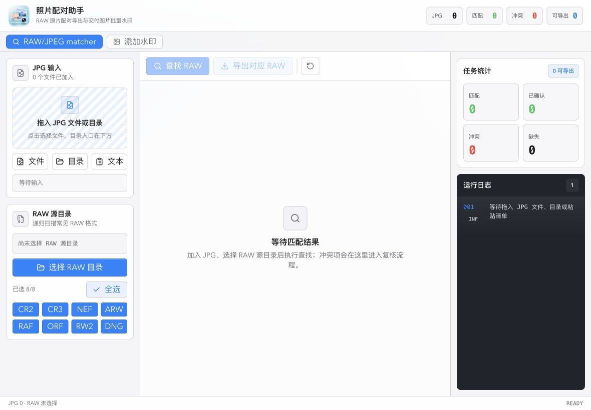
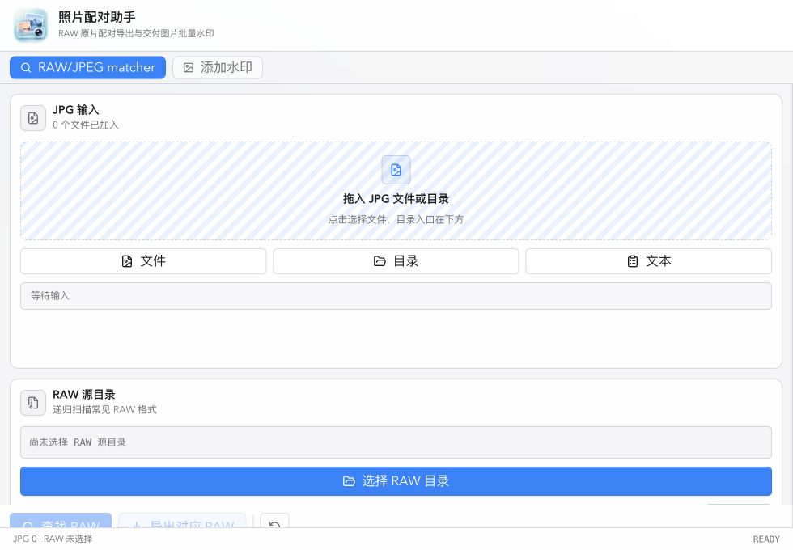

10 分制专家评分。视觉与布局已达可交付水平，平台融合仍有空间。
Tauri UI Review · New Version
照片配对助手新版界面复盘报告
日期 2026-07-08
范围 WebView UI
构建 npm run build 通过
截图 3 个视口
本报告基于新版代码、三张验收截图与 UI 技能规则复盘：新版已经从“网页后台感”转向“macOS 工具型应用”，配色、密度、焦点态与最小窗口布局显著改善；剩余差距主要集中在原生菜单、系统偏好适配、深色/高对比模式和大列表性能。
frontend-design：Minimalist / Refined
web-design-guidelines：a11y、focus、forms
ui-ux-pro-max：UX checklist，拒绝 landing/claymorphism
macos-app-design：Utility / Pro tool hybrid
原先 980px 附近输入面板高度塌陷的问题已修复，构建通过。
配色、布局、交互、可访问性四个核心维度都有明确进展。
菜单命令、主题适配、虚拟列表、快捷键可发现性建议进入下一轮。
新版截图证据
截图来自当前代码的浏览器验收。桌面三栏、水印工作区、Tauri 最小宽度附近单列模式均已重新验证。


维度评分
评分是基于截图、源码与设计指南的专家审查，不代表真实用户数据或埋点指标。
配色
4.5 → 8.6
布局
4.0 → 8.8
交互
5.4 → 7.9
A11y
5.0 → 7.6
Mac 感
4.2 → 7.8
左侧为上一轮审查的相对弱项基线，右侧为新版审查结果；用于看趋势，不作为可量化业务指标。
关键发现
新版已经完成第一轮最有效的视觉整理：把显眼但廉价的装饰降噪，换成更接近 macOS 的浅灰层次、蓝色主操作和紧凑工具布局。
配色从“自定义绿灰”转向系统浅色语义
#f5f5f7、#1d1d1f、#0a84ff 的组合更接近 macOS 默认观感，主操作也更明确。
工具型密度变合理
顶部 64px、工作区 40px、底部 28px 的行高让界面从 landing/page 感回到长期操作工具。
最小宽度布局不再断裂
1100px 以下切到单列滚动，980px 截图确认输入区、按钮、底部状态栏均可见。
冲突处理入口更明确
表格增加“操作”列和“复核”按钮，避免整行点击造成的隐藏交互和键盘可达性问题。
macOS 平台融合仍在 WebView 层
当前更像高质量 Web 工具，下一步要补标准菜单、Settings、Help、命令启停状态与快捷键展示。
大列表场景还缺性能策略
结果表和图片表仍直接渲染全部数据，超过 50 行后建议虚拟列表或 content-visibility。
证据表
下表列出本次新版审查的关键实现点、影响和剩余建议。
| 模块 | 新版证据 | 评估 | 后续建议 |
|---|---|---|---|
| 配色与材质 | src/styles.css:40 定义浅色系统 token，主色改为 #0a84ff。 |
通过 更像 macOS 工具应用，颜色语义清楚。 | 补深色、高对比、减少透明度的 token 分支。 |
| 整体布局 | src/App.tsx:452 使用 64px_40px_minmax(0,1fr)_28px。 |
通过 信息密度明显提升，顶部不再抢空间。 | 真实 Tauri 窗口中再验证标题栏和 traffic lights 的关系。 |
| 响应式断点 | src/App.tsx:638 在 min-[1100px] 以上三栏，否则单列滚动。 |
通过 980px 截图确认左侧不再高度为 0。 | 补 768px、1440px 截图基线，形成回归检查。 |
| 工具栏 | src/App.tsx:1632 采用浅色半透明工具栏，主按钮与次级按钮分层。 |
通过 操作优先级比上一版清楚。 | 按钮 tooltip 内加入 ⌘O、⌘R、⌘E 等快捷键。 |
| 结果表 | src/App.tsx:1711 增加“操作”列，冲突项显示“复核”。 |
通过 隐式整行点击被显式操作替代。 | 候选较多时可在复核按钮旁显示候选质量提示。 |
| 日志与表单语义 | src/App.tsx:1904 日志 aria-live="polite"；范围控件和文本域补 aria-label/name。 |
通过 符合 Web Guidelines 的核心可访问性要求。 | 占位符按规范改为省略号结尾，例如“输入文字水印…”。 |
| 按钮系统 | src/components/ui/button.tsx:8 使用 focus-visible，默认按钮变为蓝色主操作。 |
通过 焦点态和 hover 态更稳定。 | 少数自定义控件仍有 outline-none，虽有替代 focus，但建议统一为 focus-visible 写法。 |
| 原生 macOS | 目前审查范围主要是 WebView UI，未看到标准 App/File/Edit/View/Window/Help 菜单证据。 | 待补 “像 Mac”与“好看的 WebView”之间的最后差距。 | 在 Tauri 层补菜单、Settings、Help、命令启停状态和系统快捷键。 |
风险与下一步
下面是推荐的下一轮优化顺序，按对“高级感”和“Mac 原生感”的影响排序。
P1 · 补 Tauri 原生菜单与命令模型
建立 App / File / Edit / View / Window / Help 菜单，把选择 JPG、选择 RAW、执行匹配、导出、清空、Settings、Help 统一映射到同一套 command model。这样快捷键才从“隐藏 JS 监听”变成可发现的 Mac 行为。
P1 · 加深色、高对比、减少透明度适配
当前 color-scheme: light 是合理的第一步，但 macOS 用户会期待随系统外观变化。建议先做 token 级 dark mode，再补 prefers-contrast 与 reduced transparency 的视觉降级。
P1 · 大列表虚拟化或分段渲染
RAW 匹配和水印输入都可能出现数百甚至数千条数据。表格渲染应引入虚拟列表，或者至少对非可视行使用 content-visibility: auto。
P2 · 统一中文命名与快捷键展示
RAW/JPEG matcher 建议改为“RAW/JPG 配对”，并在按钮 tooltip 或菜单中显示 ⌘O、⇧⌘O、⌘R、⌘E。
P2 · 建立截图回归基线
保留 980x680、1180x820、1440x900 三档截图作为 UI 验收基线，每次调整布局后自动比对关键容器尺寸和空白异常。
结论
新版已经值得继续打磨，而不是推倒重做。
这轮优化把最影响观感的部分处理掉了：配色更克制、布局更稳、按钮层级更清楚、可访问性缺口被补上，尤其是 980px 最小宽度问题已经消失。现在的主要工作不再是“让界面好看一点”，而是把它从一个优秀 WebView 工具推进到更完整的 macOS app：菜单命令、系统外观、快捷键可发现性、帮助与设置、以及大数据量性能。
资料来源：本地代码与截图、macos-app-design 本地指南、ui-ux-pro-max 本地规则、frontend-design 本地规则，以及最新 Web Interface Guidelines：Vercel Web Interface Guidelines。